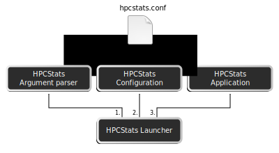
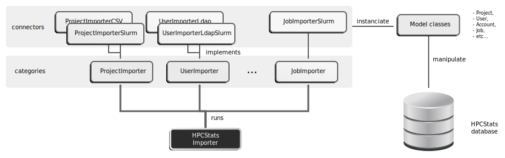
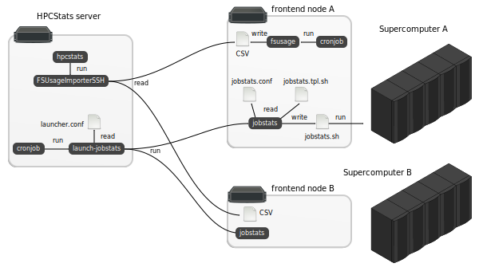

HPCStats is composed of a server component, the main part of the software, and various agents and a launcher. The server component is mainly used to extract raw production data from various sources and then import it into the HPCStats database. The agents are used to produce data well formatted data on the supercomputer, typically on the frontend (or login) nodes. All these components are described with full details in the following sub-sections.
All production data imported by HPCStats are structured and hosted in a relational SQL database using PostgreSQL 9+ RDBMS. The following figure represents the UML class diagram of the HPCStats database:
The database is designed to store the data coming from multiple supercomputers (or clusters). Therefore, most tables are linked, directly or not, to the Cluster table (Jobs, Filesystems, etc). The notable exceptions are:
The following diagrams represents the software architecture of the base of HPCStats server component:
Whole server component is management by the HPCStats launcher. This launcher sequentially instanciates the following objects:
HPCStats server component has multiple applications that are available to users. The launched application depends on the action parameter given in the command line (please refer to the Usage guide for details). The available applications are:
The Importer application is the original, main and most complex application of HPCStats server component. This diagrams gives on overview of this application architecture:
The Importer application is divided into several importer categories. Each category has multiple implementations called connectors. These connectors instanciate the model classes to manipulate the HPCStats database content.
Each category of importer is responsible of filling one or more tables of the database. On the other side, a table is filled by only one importer category.
All the connectors and database tables associated to the importer categories are summarised in the following table:
| Category | Database tables | Available connectors |
|---|---|---|
| Project |
|
|
| BusinessCode |
|
|
| Architecture |
|
|
| User |
|
|
| Job |
|
|
| FSUsage |
|
|
| Event |
|
|
The inner working of each connector is explained with all details in the API reference.
Notable feature of HPCStats are end-to-end supercomputer availability measurement from users standpoint and shared filesystem usage rate. Those metrics are hard to track from a remote server. Therefore, for such purpose, some agents and a launcher components have been designed.
The following diagram illustrate the deployed architecture of these components:
These agents are optionals, there role is just to generate accurate data for specific metrics.